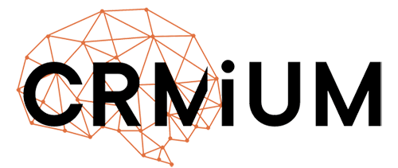

За останній рік підходи до роботи в маркетингу суттєво змінились. ШІ-інструменти дозволяють автоматизувати більшість рутинних процесів — генерацію контенту, звітність, моніторинг, комунікацію. Класична модель, де кожен спеціаліст закриває один канал, стає менш ефективною: вона повільніша, дорожча і складніша для масштабування.
Компанії, які першими адаптуються до нових реалій, отримають перевагу. Для CRMiUM це особливо актуально - адже саме автоматизацію бізнес-процесів ми впроваджуємо нашим клієнтам.
Пропоную перейти від класичної ієрархічної структури до лінійної операційної моделі, де кожен спеціаліст керує своїми ШІ-агентами і відповідає за результат, а не за процес.
Окремий стратегічний напрямок, який не дає миттєвого результату, але критично важливий для довгострокової конкурентоспроможності.
Більшість із того, що описано вище — я вже роблю або запустив у тестовому режимі. За 7 місяців роботи я детально зрозумів процеси компанії, маю всі необхідні доступи і розуміння технічних особливостей проєкту.